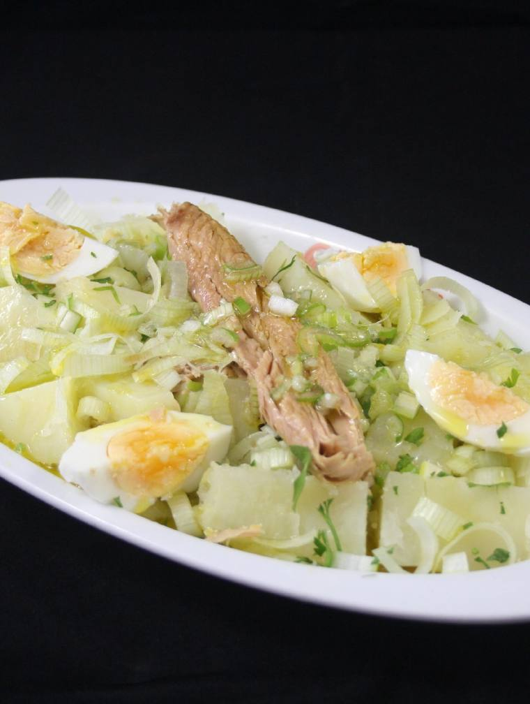

Entrées espagnoles et tapas

Entrées espagnoles et tapas
Papas aliñás
Pommes de terre à l’andalouse
Préparation : 15 min
Repos : 1 h
Cuisson : 25 min
Ingrédients (pour 4 personnes)
- 1 kg de pommes de terre
- 2 oignons nouveaux
- 6 cuillères à soupe d’huile d’olive
- 2 cuillères à soupe de vinaigre de Xérès
- persil, sel
Quantités adaptées. Les temps de cuisson ne sont pas recalculés.
- Cuire les pommes de terre en peau à l’eau salée 20 à 25 minutes.
- Peler, couper en rondelles et assaisonner encore chaudes avec oignon, persil, huile, vinaigre et sel.
- Laisser refroidir avant de servir.
D’après Spain.info, office espagnol du tourisme. Traduit et reformulé, assaisonnement quantifié.